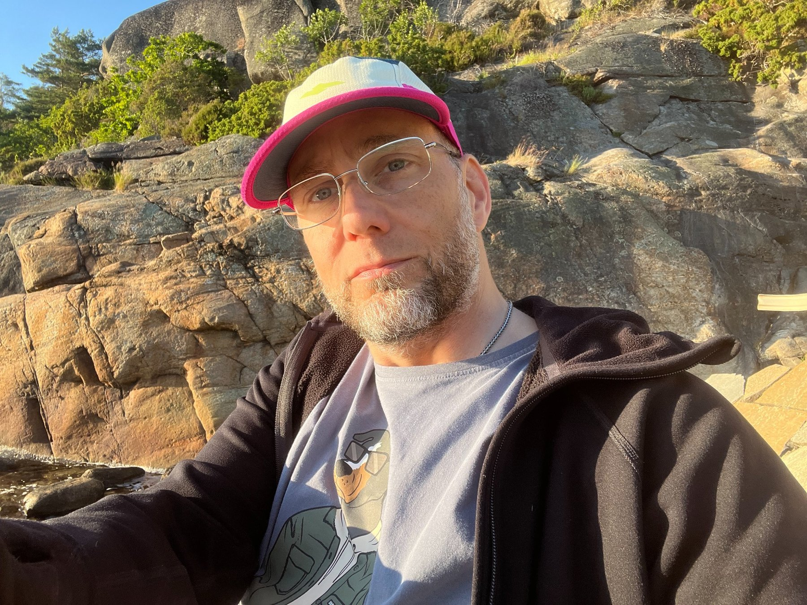

Visionen
Vi gör helgen tillsammans
Djuphelg är inte ett färdigt arrangemang där några få skapar programmet och resten deltar. Ramen finns: plats, dyklogistik, säkerhet och gemensam riktning.
Innehållet växer sedan fram ur gruppen. Någon håller en workshop, någon coachar, någon fixar fika eller mat, hjälper till med utrustning eller tar ansvar för en praktisk detalj.
Tanken är enkel: ser du något som skulle göra helgen bättre, större eller lättare för någon annan, så är det värt att göra.
Så fungerar det
Praktiskt under helgen
- Två djupdykspass per dag Lördag och söndag finns två planerade ramar för djupdykning per dag. Själva passen bygger på att deltagarna dyker, hjälper till och tar ansvar tillsammans.
- Säkerhet först Dykpar matchas efter nivå och fungerar som buddy och säkerhetsdykare för varandra. Mer oerfarna dykare får stöd av säkerhetsdykare och/eller coacher under passen.
- Deltagarna skapar innehållet Workshops, coachning, erfarenhetsutbyte, samtal, gemensamma måltider, transport, utrustningshjälp och andra initiativ växer fram ur deltagarna.
- Eget ansvar Var och en ordnar resa, boende, mat och personlig utrustning. Helgen utgår från Fossens Camping och tanken är att de flesta bor där, men det går också bra att lösa boende på annat sätt.
- En första provomgång I år testar vi Djuphelg i mindre omfattning för att se hur formatet kan fungera, växa och utvecklas inför möjliga större arrangemang i framtiden. Om fler anmäler sig än det finns plats för gäller först till kvarn.

Om initiativtagaren
Hej, jag heter Max
Det är jag som tagit initiativ till Djuphelg.
Jag har fridykt i över tio år och är instruktör inom både CMAS och AIDA. Under åren har jag hållit fridykningskurser i Sverige och på Teneriffa, dykt med skickliga fridykare runt om i världen och utforskat djupen.
Under flera år har jag arbetat för att bygga upp djupfridykningen på västkusten, framför allt i Gullmarn och genom Juniordykarna. Djuphelg känns som nästa naturliga steg – att öppna upp för fler än den egna klubben och skapa något som kan bli större än en enskild arrangör.
Idén är inspirerad av deltagardrivna event där decentralisering, gåvor och radikalt samarbete är bärande principer. Jag tror att samma tankesätt kan skapa något väldigt fint även inom fridykningen.
Jag bjuder in och erbjuder ramen, men innehållet skapar vi tillsammans.
Jag hoppas att du vill vara med och forma den första Djuphelgen.
Kort information
Anmälan
Vill du vara med? Fyll i anmälningsformuläret om du planerar att komma. Vi återkommer med bekräftelse och mer information.
Anmäl digFrågor? Mejla info@djuphelg.se.